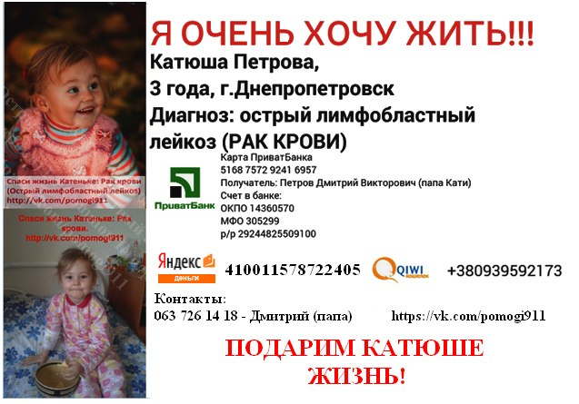

24 декабря 2014 года Катеньке Петровой поставили диагноз "острый лимфобластный лейкоз" (рак крови). Необходимо длительное (не менее 9 месяцев) лечение в больнице и не меньше года займет реабилитация дома. Шансы на полное выздоровление очень высокие - от 70 до 95 %. Рассчитать сумму, требуемую на лекарства, невозможно, но все лекарства дорогие и купить их самостоятельно семье не под силу.
Ей 3 годика. Катя с самого рождения болезненный ребенок. Есть проблемы с почками и с сердечком. В последние 2 месяца перед постановкой диагноза она сильно болела. То ОРВИ, то бронхит, то ангина, то почки. 3 дня в садике, 2 недели дома. И вот родители стали замечать синяки на теле у ребенка, сама Катя начала жаловаться на боль в ножках, быстро уставала на прогулке и при ходьбе. Стали замечать постоянную температуру. Сдали анализы крови и Катю с мамой Александрой срочно 19 декабря 2014 года госпитализировали в Гематологическое отделение ДОКБ на ул. Космическая,13. Затем была пункция, анализ отправляли на исследование в клинику Охматдет в г. Киев. И результат таков - острый лимфобластный лейкоз. Сейчас Катя продолжает лечение в ДОКБ в гематологии. Первая химия была 31-го декабря. Организм очень слабенький и остро отреагировал на химию. Катя на искусственном питании (кушать сама не может, несварение). Похудела уже на 2 кг. Не встает. 9 января 2015 года после ночного приступа Катя попала в реанимацию.
Семья у Кати самая обычная. Мама Александра - ветеринар, работает в зоомагазине. Папа Дмитрий - бывший милиционер, в данный момент работает слесарем-механиком на СТО. Доходы очень скромные. Семьей и близкими родственниками уже в первые две недели было потрачено около 15 тыс. грн на всевозможные анализы и лекарственные препараты. Поэтому на сегодняшний день они просто вынуждены просить помощи у посторонних людей. Не оставайтесь равнодушными! Эта маленькая девочка очень хочет победить болезнь!
